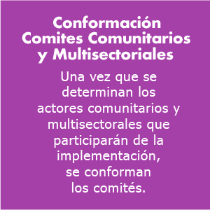
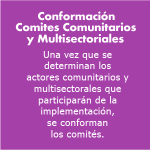
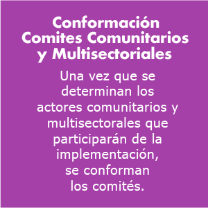

Realizar el mapeo de actores que dé lugar a procesos organizados de participación e integración comunitaria para la gestión de comportamientos sociales seguros.

Objetivo - Tiempo - Recursos

Paso a paso

Herramientas


Objetivo de la fase:
Realizar un mapeo de actores que dé lugar a la conformación de Comités Comunitarios y Multisectoriales para la implementación de la metodología.
Tiempo estimado de ejecución:
30 días
Recursos requeridos:
Financieros: Se debe garantizar la disponibilidad presupuesta para la contratación del profesional que liderará esta metodología.
Didácticos: Se requiere de los siguientes materiales: tarjetas de colores de 10 X 10 cm, marcadores, 2 paleógrafos (3 X 1 m), 2 rollos de cinta de enmascarar, hojas de papel iris, fichas redondas de 12 o 15 cm de diámetro, matrices DOFA de medio pliego para cada grupo y, 1 matriz tamaño tres pliegos para la plenaria.
Humanos: El proceso de acercamiento y convocatoria requiere de la dedicación exclusiva de al menos dos personas, así como la facilitación de un encuentro de diálogo social para la realización del mapa de actores.
